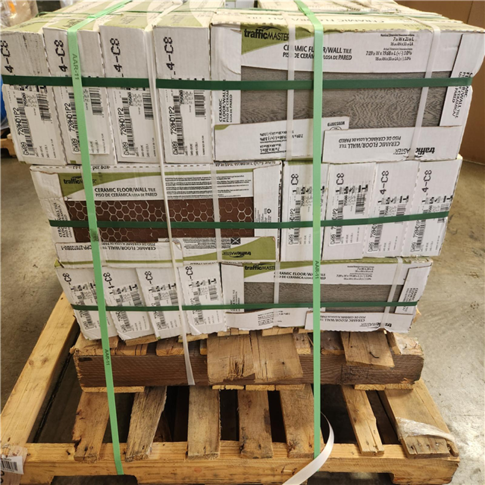

Piso cerámico

Pieza fabricada con materiales cerámicos que aporta una superficie decorativa y fácil de limpiar. Se ofrece en varios diseños, dimensiones y acabados; la elección debe considerar el tránsito y el lugar de instalación.